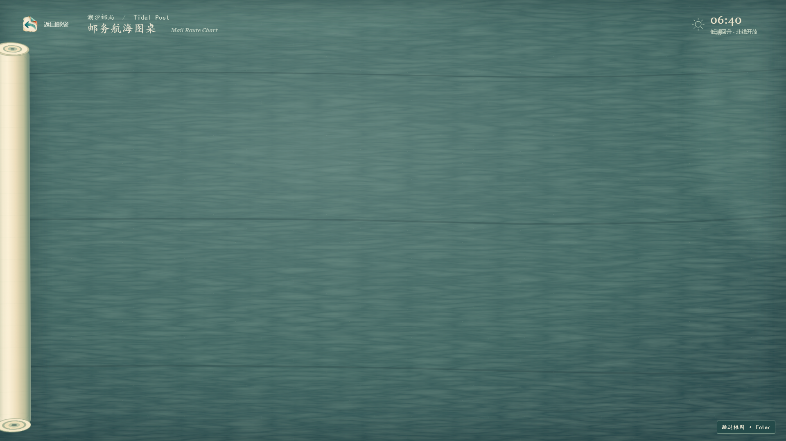
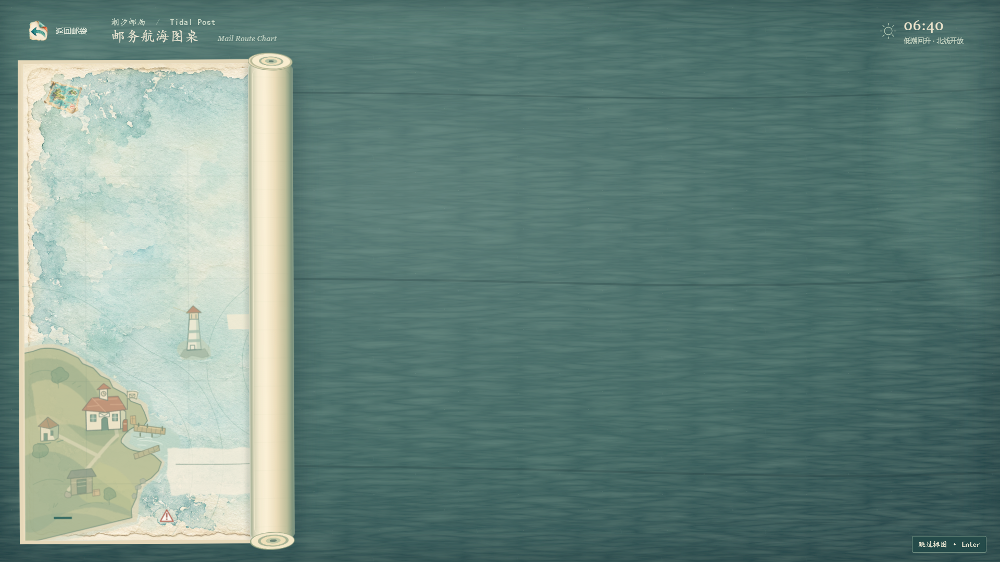
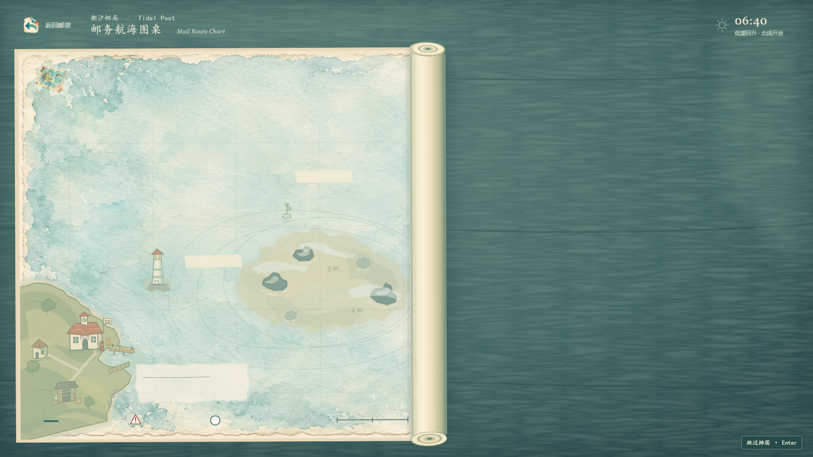
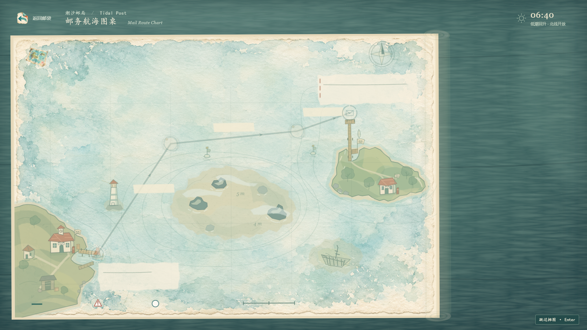
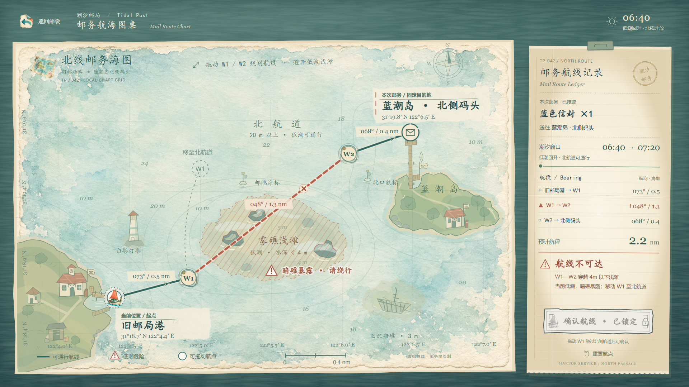
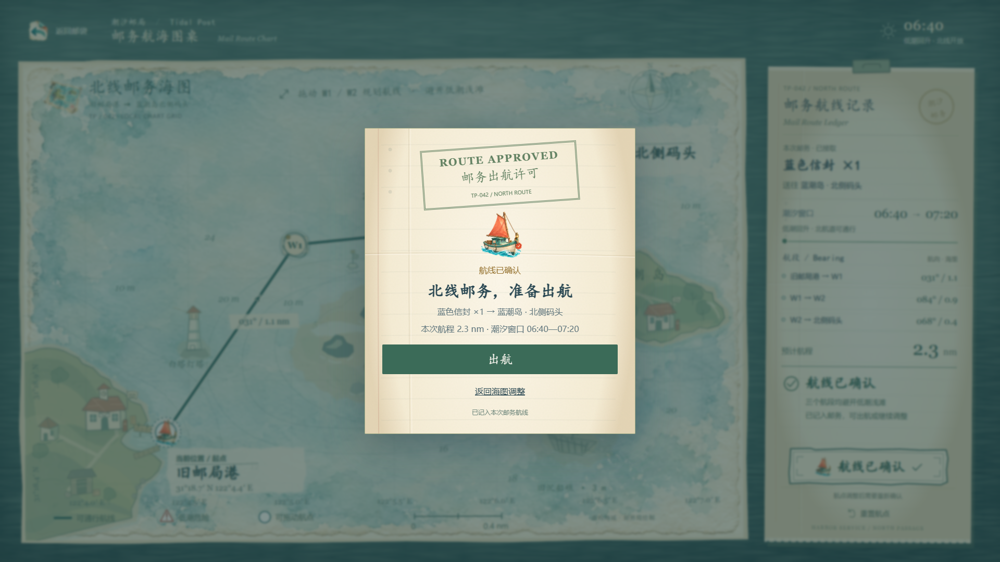
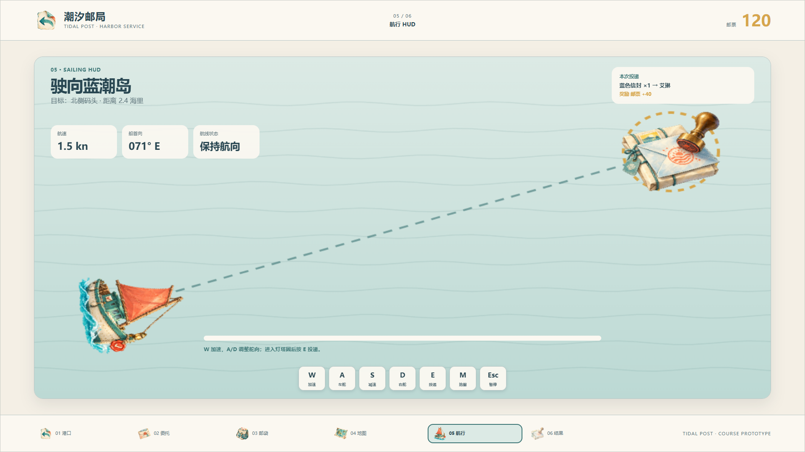
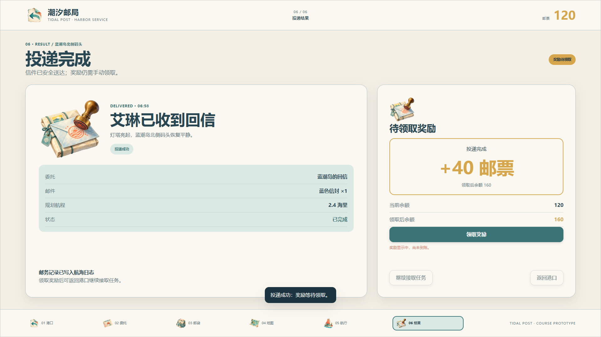
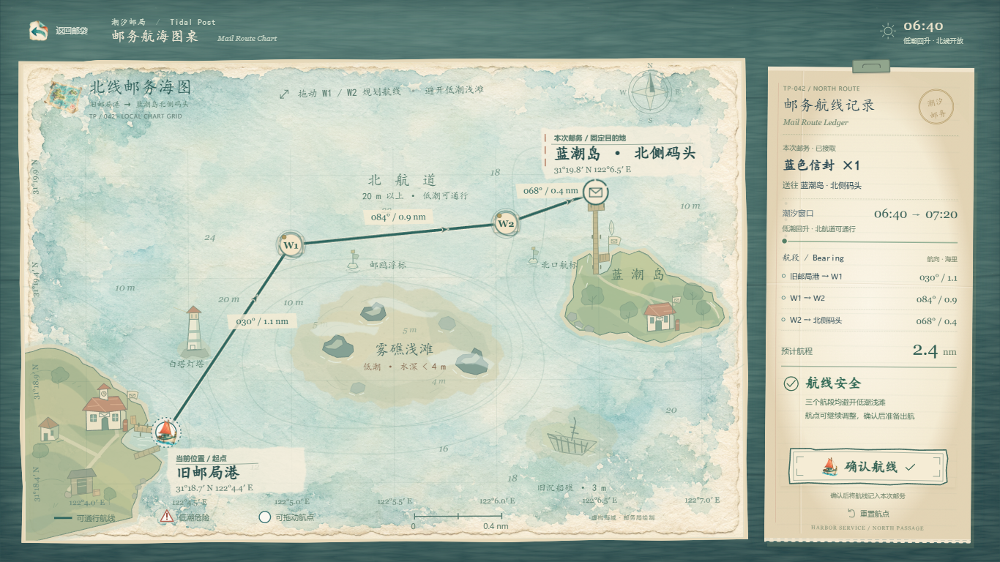

潮汐邮局 · 摊图与完整原型集成
录像从真实 Root Prototype 流程录制，没有跳过摊图或手动寻帧。当前截图采样较慢，会漏掉快速展开的部分中间帧；摊图细节请结合下方关键帧和本地直接播放查看。从港口开始游玩 · 接入和验证说明
保存邮袋 → 自然摊图 → 地图就绪
邮袋 → 摊图 → 禁航与恢复 → 确认 → 出航
原生时间线关键帧

350ms · 纸卷落桌
实际可见区域 35%
实际可见区域 70%
1330ms · 铺平、路线开始出现 就绪 · 与独立 Week4 同条件像素差异 0
就绪 · 与独立 Week4 同条件像素差异 0
真实拖动触发浅滩禁航
原确认弹窗与邮务许可
同一原型进入原 Canvas 航行返回保留草稿，只有 180ms 淡入减少动态效果 · 150ms 淡入
真实航行投递后的结果
1366×768 等比地图与实际拖动验证验证报告
集成 59/59 · Week4 36/36 · 最终 Art Pass 16/16 · 像素比较 · 连续录像记录